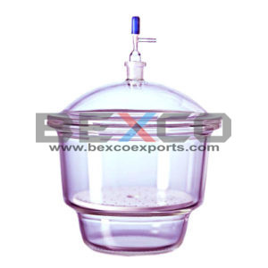
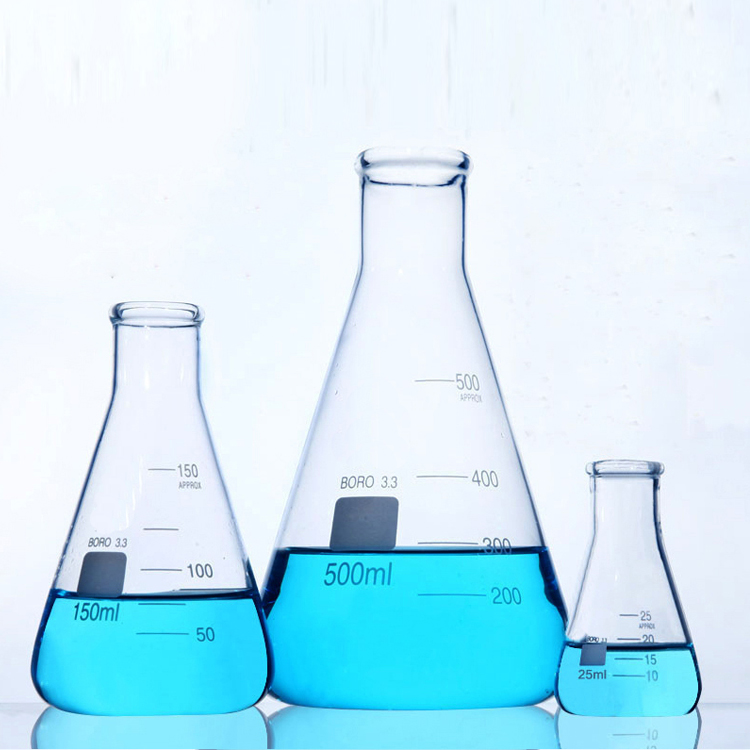
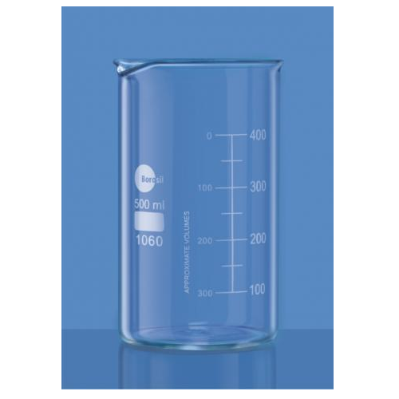
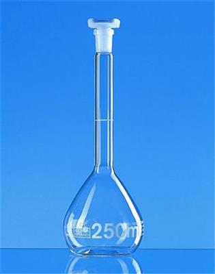

-
DESICCATOR, VACUUM WITH TUBULAR LID & GROUND FLANGES.
$180.00 – $699.00
Desiccator, Vacuum with tubular Lid, Ground Flanges stopcock made of Neutral glass, supplied with Perforated Porcelain Plate.
$180.00 – $699.00
Desiccator, Vacuum with tubular Lid, Ground Flanges stopcock made of Neutral glass, supplied with Perforated Porcelain Plate.

-
FLASKS ERLENMEYER, CONICAL, NARROW MOUTH.
$45.00-$160.00
$45.00-$160.00
Flasks Erlenmeyer's, Conical, Approx. graduation, Narrow mouth.

-
BEAKERS TALL FORM, WITH SPOUT, GRADUATION
$48.00-180.00
Beakers Tall form, with spout, graduation ±5% accuracy.
$48.00-180.00
Beakers Tall form, with spout, graduation ±5% accuracy.

-

FLASK VOLUMETRIC, CLASS “B”.
$40.00 – $300.00
Flask Volumetric, Wide Mouth with interchangeable stopper, Class 'B" (These Flasks are suitable for testing bigger dia tablets without making it in powder form). Capacity:5, 10, 20, 25, 50, 100, 200, 250, 500, 1000, 2000 ml.
$40.00 – $300.00
Flask Volumetric, Wide Mouth with interchangeable stopper, Class 'B" (These Flasks are suitable for testing bigger dia tablets without making it in powder form). Capacity:5, 10, 20, 25, 50, 100, 200, 250, 500, 1000, 2000 ml.
MEASURING CYLINDER ROUND BASE CLASS B
$85.00 – $135.00
These Class B Measuring Cylinders are manufactured, as per DIN standards, from borosilicate glass 3.3 with glass round base.
These measuring cylinder is a single piece construction including glass base.
Inscriptions and graduations are printed with amber enamel.
Calibrated to provide accurate measurements at 20°c.
$85.00 – $135.00
These Class B Measuring Cylinders are manufactured, as per DIN standards, from borosilicate glass 3.3 with glass round base.
These measuring cylinder is a single piece construction including glass base.
Inscriptions and graduations are printed with amber enamel.
Calibrated to provide accurate measurements at 20°c.